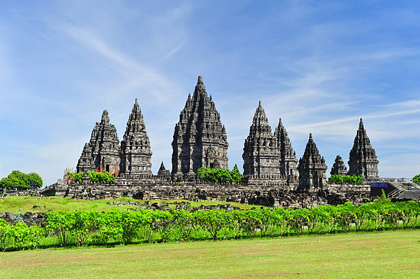

|  |
Candi Borobudur, sebuah monumen Buddha terbesar di dunia, dibangun sekitar abad ke-9 Masehi di wilayah Jawa Tengah, Indonesia, pada masa pemerintahan Wangsa Syailendra. Konstruksi megah ini dimulai pada masa pemerintahan Raja Samaratungga dan diselesaikan oleh putranya, Ratu Pramudrawardhani. Candi ini mencerminkan kemegahan seni dan arsitektur Buddha Mahayana, serta merupakan pusat pemujaan dan aktivitas keagamaan Buddha hingga abad ke-14. Setelah mengalami periode terlantar dan tertutupi abu vulkanik, Borobudur ditemukan kembali dan direstorasi pada abad ke-19, menjadikannya salah satu situs bersejarah terpenting dan daya tarik pariwisata utama di Indonesia. |
|
Mari kita merasakan pesona magis Candi Prambanan di Yogyakarta, Indonesia. Di tengah perpaduan arsitektur megah dan keindahan alam, Candi Prambanan mengajak Anda untuk membenamkan diri dalam sejarah dan spiritualitas Hindu. Saksikan keelokan relief yang menceritakan epik Ramayana dan nikmati panorama keindahan matahari terbenam di latar belakang candi yang megah. Bersamaan dengan kesejukan hutan di sekitarnya, rasakan ketenangan dan keindahan budaya yang mendalam di tempat suci ini. Selamatkan momen tak terlupakan dalam perjalanan spiritual dan kebudayaan di Candi Prambanan, dan buat kenangan indah di salah satu cagar budaya terkemuka Indonesia ini. |
|